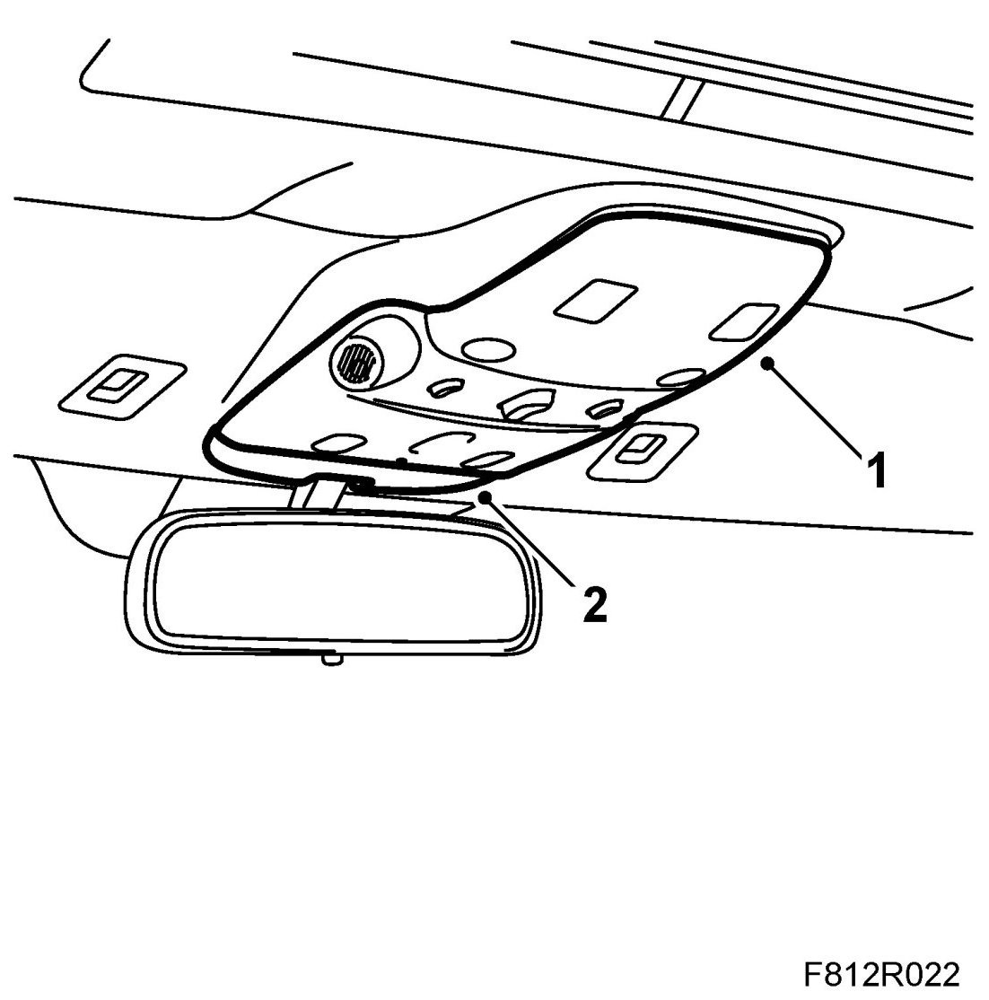
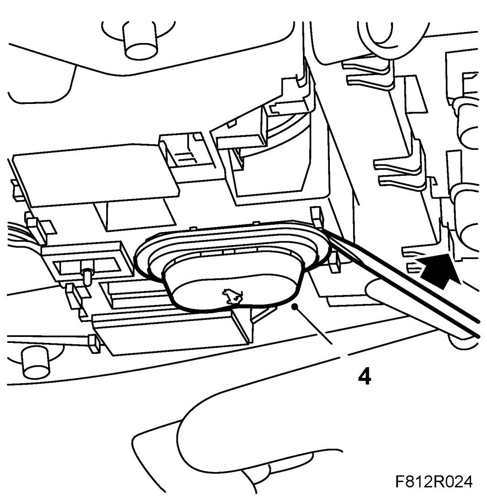
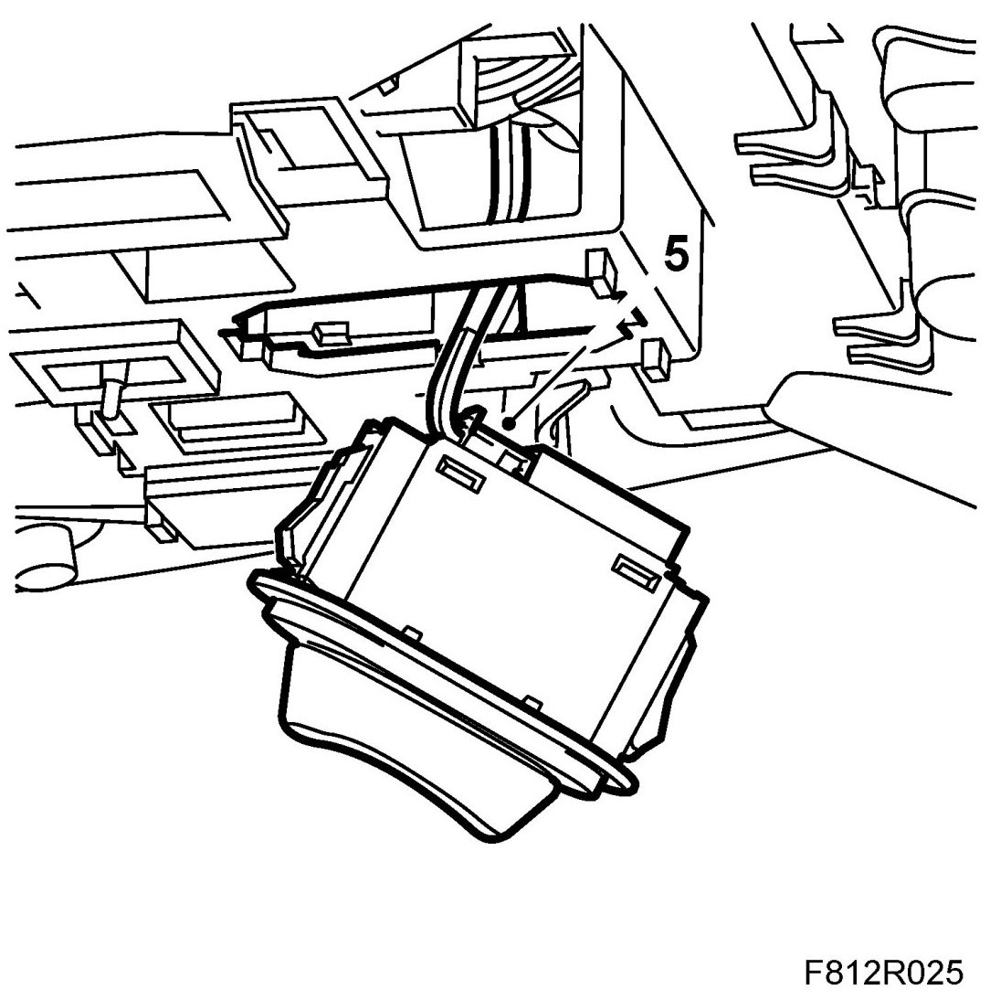
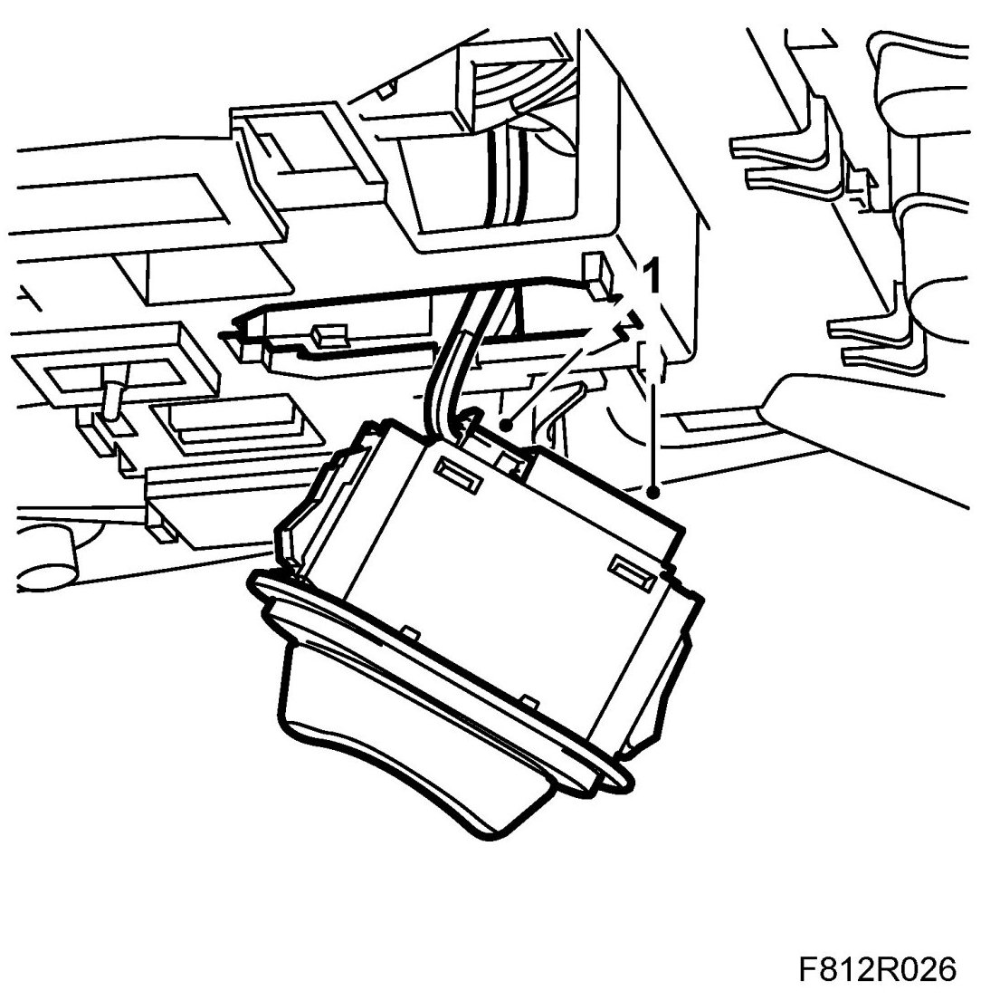
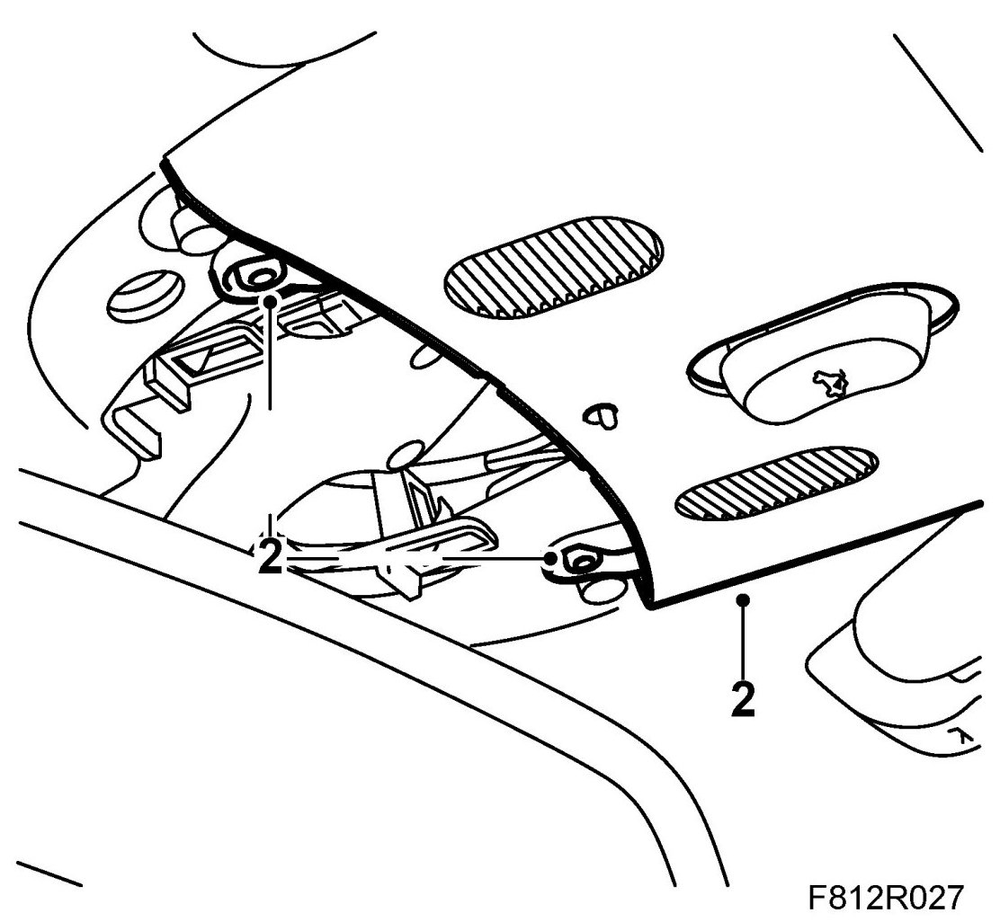
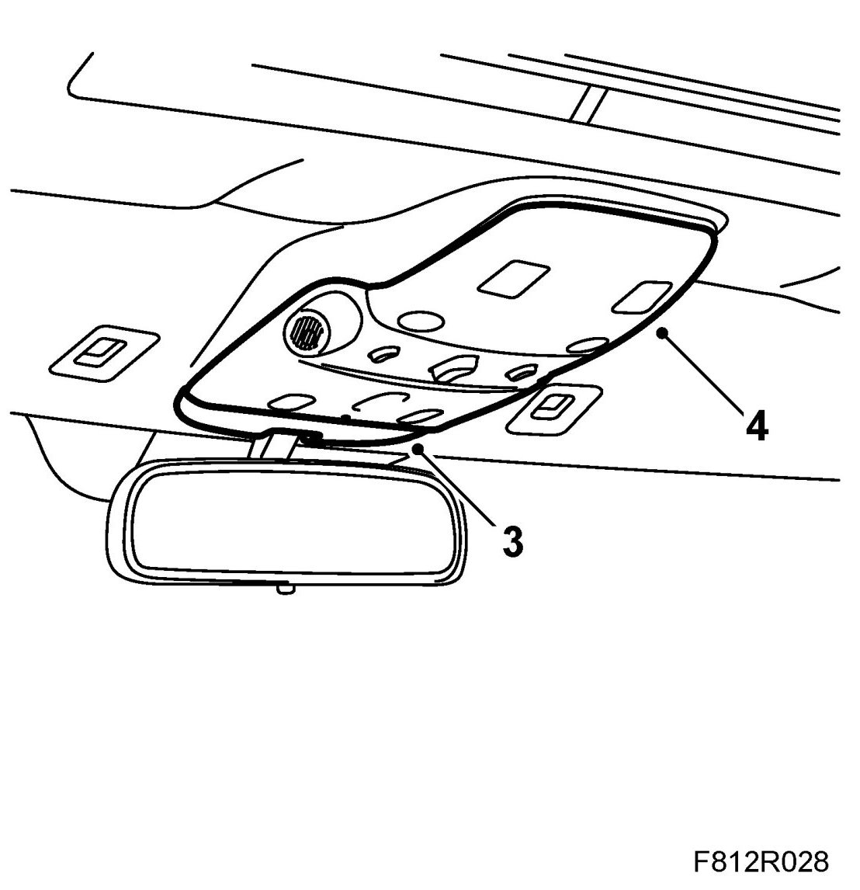

Sunroof / Moonroof Switch: Service and Repair
Electrically Operated Sunroof Switch (181)
To remove
1. Remove the lamp lens using 82 93 474 Removal tool.

2. Remove the front cover using 82 93 474 Removal tool.
3. Remove the centre cover.
4. Remove the switch.

5. Remove the connector using a small screwdriver.

To fit
1. Fit the connector and the switch.

2. Fit the centre cover to the roof lighting.

3. Fit the front cover to the roof lighting.

4. Fit the lamp lens.